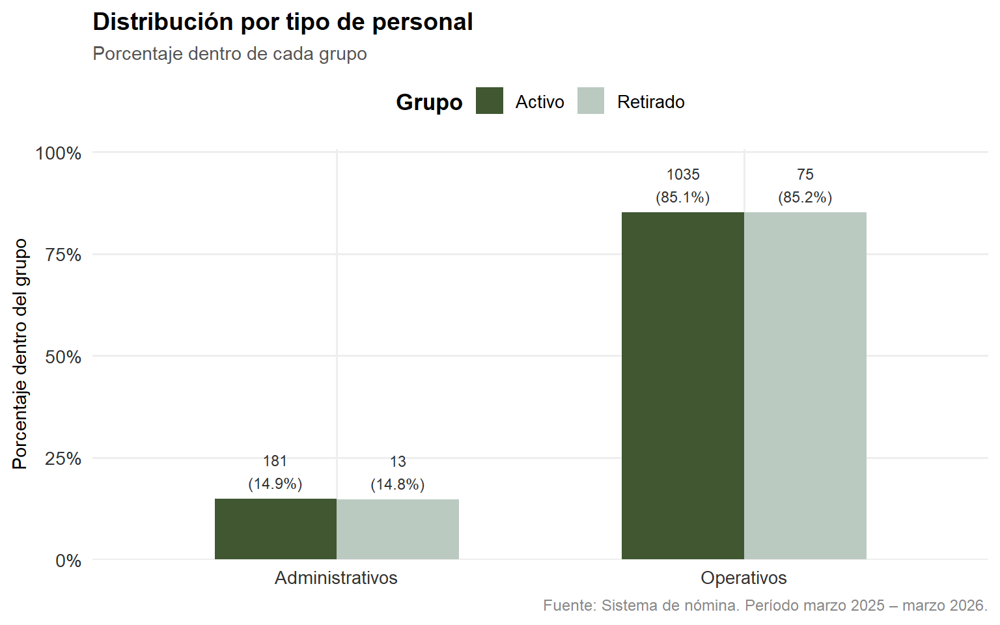
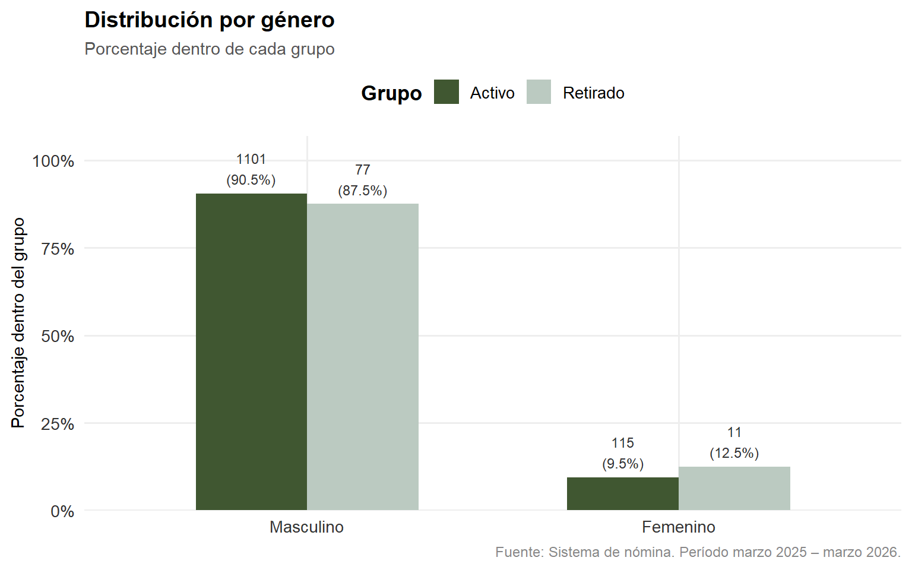
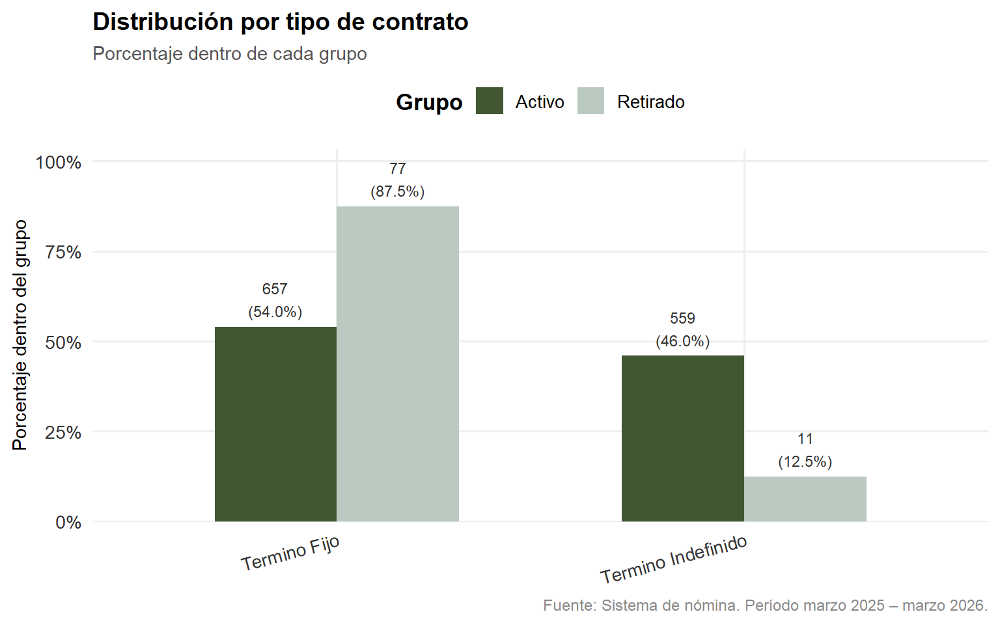

Capítulo 3 Análisis Exploratorio
3.1 Valores nulos
Antes de explorar las variables se verifica la presencia de valores nulos en el dataset. Esto permite identificar posibles problemas de calidad de datos que podrían afectar el análisis.
df %>%
select(estado, edad, antig_a, género, tipo_personal, contrato, dpto) %>%
summarise(across(everything(), ~sum(is.na(.)))) %>%
pivot_longer(everything(),
names_to = "Variable",
values_to = "Nulos") %>%
mutate(
`Total` = nrow(df),
`%` = percent(Nulos / Total, accuracy = 0.1)
) %>%
kable(caption = "Valores nulos por variable de análisis") %>%
kable_styling(bootstrap_options = c("striped", "hover", "condensed"),
full_width = FALSE)| Variable | Nulos | Total | % |
|---|---|---|---|
| estado | 0 | 1304 | 0.0% |
| edad | 0 | 1304 | 0.0% |
| antig_a | 0 | 1304 | 0.0% |
| género | 0 | 1304 | 0.0% |
| tipo_personal | 0 | 1304 | 0.0% |
| contrato | 0 | 1304 | 0.0% |
| dpto | 0 | 1304 | 0.0% |
3.2 Variables numéricas
3.2.1 Estadísticos descriptivos
df %>%
group_by(estado) %>%
summarise(
across(c(edad, antig_a), list(
Media = ~round(mean(., na.rm = TRUE), 1),
DE = ~round(sd(., na.rm = TRUE), 1),
CV = ~round(sd(., na.rm = TRUE) / mean(., na.rm = TRUE) * 100, 1),
Q25 = ~round(quantile(., 0.25, na.rm = TRUE), 1),
Mediana = ~round(median(., na.rm = TRUE), 1),
Q75 = ~round(quantile(., 0.75, na.rm = TRUE), 1),
IQR = ~round(IQR(., na.rm = TRUE), 1),
Min = ~round(min(., na.rm = TRUE), 1),
Max = ~round(max(., na.rm = TRUE), 1)
), .names = "{.col}__{.fn}")
) %>%
mutate(across(-estado, as.character)) %>%
pivot_longer(-estado,
names_to = c("Variable", "Estadístico"),
names_sep = "__") %>%
mutate(Variable = recode(Variable,
"edad" = "Edad (años)",
"antig_a" = "Antigüedad (años)")) %>%
pivot_wider(names_from = estado, values_from = value) %>%
kable(caption = "Estadísticos descriptivos de variables numéricas por grupo") %>%
kable_styling(bootstrap_options = c("striped", "hover", "condensed"),
full_width = FALSE)| Variable | Estadístico | Activo | Retirado |
|---|---|---|---|
| Edad (años) | Media | 38.4 | 29.8 |
| Edad (años) | DE | 11.5 | 6.6 |
| Edad (años) | CV | 30 | 22.3 |
| Edad (años) | Q25 | 29 | 25 |
| Edad (años) | Mediana | 36 | 29.5 |
| Edad (años) | Q75 | 47 | 32 |
| Edad (años) | IQR | 18 | 7 |
| Edad (años) | Min | 18 | 19 |
| Edad (años) | Max | 88 | 58 |
| Antigüedad (años) | Media | 5.7 | 1.7 |
| Antigüedad (años) | DE | 5.3 | 2.6 |
| Antigüedad (años) | CV | 92 | 152.3 |
| Antigüedad (años) | Q25 | 1 | 0 |
| Antigüedad (años) | Mediana | 3 | 1 |
| Antigüedad (años) | Q75 | 10 | 2 |
| Antigüedad (años) | IQR | 9 | 2 |
| Antigüedad (años) | Min | 0 | 0 |
| Antigüedad (años) | Max | 16 | 15 |
3.2.2 Edad
ggplot(df, aes(x = estado, y = edad, fill = estado)) +
geom_boxplot(alpha = 0.85, outlier.shape = 21,
outlier.fill = "white", outlier.color = "#405731",
width = 0.5) +
stat_summary(fun = mean, geom = "point", shape = 23,
size = 3, fill = "white", color = "#333333") +
scale_fill_manual(values = paleta) +
labs(title = "Distribución de edad por grupo",
subtitle = "El rombo blanco indica la media. Los puntos son valores atípicos.",
x = NULL,
y = "Edad (años)",
fill = "Grupo",
caption = "Fuente: Sistema de nómina. Período marzo 2025 – marzo 2026.") +
tema
3.2.3 Antigüedad
ggplot(df, aes(x = estado, y = antig_a, fill = estado)) +
geom_boxplot(alpha = 0.85, outlier.shape = 21,
outlier.fill = "white", outlier.color = "#405731",
width = 0.5) +
stat_summary(fun = mean, geom = "point", shape = 23,
size = 3, fill = "white", color = "#333333") +
scale_fill_manual(values = paleta) +
labs(title = "Distribución de antigüedad por grupo",
subtitle = "El rombo blanco indica la media. Los puntos son valores atípicos.",
x = NULL,
y = "Antigüedad (años)",
fill = "Grupo",
caption = "Fuente: Sistema de nómina. Período marzo 2025 – marzo 2026.") +
tema
3.3 Variables categóricas
3.3.1 Tipo de personal
df %>%
count(estado, tipo_personal) %>%
group_by(estado) %>%
mutate(Porcentaje = percent(n / sum(n), accuracy = 0.1)) %>%
ungroup() %>%
rename(Grupo = estado, `Tipo de personal` = tipo_personal, N = n) %>%
kable(caption = "Distribución por tipo de personal según grupo") %>%
kable_styling(bootstrap_options = c("striped", "hover", "condensed"),
full_width = FALSE)| Grupo | Tipo de personal | N | Porcentaje |
|---|---|---|---|
| Activo | Administrativos | 181 | 14.9% |
| Activo | Operativos | 1035 | 85.1% |
| Retirado | Administrativos | 13 | 14.8% |
| Retirado | Operativos | 75 | 85.2% |
df %>%
count(estado, tipo_personal) %>%
group_by(estado) %>%
mutate(pct = n / sum(n),
etiqueta = paste0(n, "\n(", percent(pct, accuracy = 0.1), ")")) %>%
ggplot(aes(x = tipo_personal, y = pct, fill = estado)) +
geom_col(position = "dodge", width = 0.6) +
geom_text(aes(label = etiqueta),
position = position_dodge(width = 0.6),
vjust = -0.3, size = 3.2, color = "#333333") +
scale_y_continuous(labels = percent_format(accuracy = 1),
expand = expansion(mult = c(0, 0.18))) +
scale_fill_manual(values = paleta) +
labs(title = "Distribución por tipo de personal",
subtitle = "Porcentaje dentro de cada grupo",
x = NULL,
y = "Porcentaje dentro del grupo",
fill = "Grupo",
caption = "Fuente: Sistema de nómina. Período marzo 2025 – marzo 2026.") +
tema
3.3.2 Género
df %>%
count(estado, género) %>%
group_by(estado) %>%
mutate(Porcentaje = percent(n / sum(n), accuracy = 0.1)) %>%
ungroup() %>%
rename(Grupo = estado, Género = género, N = n) %>%
kable(caption = "Distribución por género según grupo") %>%
kable_styling(bootstrap_options = c("striped", "hover", "condensed"),
full_width = FALSE)| Grupo | Género | N | Porcentaje |
|---|---|---|---|
| Activo | Masculino | 1101 | 90.5% |
| Activo | Femenino | 115 | 9.5% |
| Retirado | Masculino | 77 | 87.5% |
| Retirado | Femenino | 11 | 12.5% |
df %>%
count(estado, género) %>%
group_by(estado) %>%
mutate(pct = n / sum(n),
etiqueta = paste0(n, "\n(", percent(pct, accuracy = 0.1), ")")) %>%
ggplot(aes(x = género, y = pct, fill = estado)) +
geom_col(position = "dodge", width = 0.6) +
geom_text(aes(label = etiqueta),
position = position_dodge(width = 0.6),
vjust = -0.3, size = 3.2, color = "#333333") +
scale_y_continuous(labels = percent_format(accuracy = 1),
expand = expansion(mult = c(0, 0.18))) +
scale_fill_manual(values = paleta) +
labs(title = "Distribución por género",
subtitle = "Porcentaje dentro de cada grupo",
x = NULL,
y = "Porcentaje dentro del grupo",
fill = "Grupo",
caption = "Fuente: Sistema de nómina. Período marzo 2025 – marzo 2026.") +
tema
3.3.3 Tipo de contrato
df %>%
count(estado, contrato) %>%
group_by(estado) %>%
mutate(Porcentaje = percent(n / sum(n), accuracy = 0.1)) %>%
ungroup() %>%
rename(Grupo = estado, `Tipo de contrato` = contrato, N = n) %>%
kable(caption = "Distribución por tipo de contrato según grupo") %>%
kable_styling(bootstrap_options = c("striped", "hover", "condensed"),
full_width = FALSE)| Grupo | Tipo de contrato | N | Porcentaje |
|---|---|---|---|
| Activo | Termino Fijo | 657 | 54.0% |
| Activo | Termino Indefinido | 559 | 46.0% |
| Retirado | Termino Fijo | 77 | 87.5% |
| Retirado | Termino Indefinido | 11 | 12.5% |
df %>%
count(estado, contrato) %>%
group_by(estado) %>%
mutate(pct = n / sum(n),
etiqueta = paste0(n, "\n(", percent(pct, accuracy = 0.1), ")")) %>%
ggplot(aes(x = contrato, y = pct, fill = estado)) +
geom_col(position = "dodge", width = 0.6) +
geom_text(aes(label = etiqueta),
position = position_dodge(width = 0.6),
vjust = -0.3, size = 3.2, color = "#333333") +
scale_y_continuous(labels = percent_format(accuracy = 1),
expand = expansion(mult = c(0, 0.18))) +
scale_fill_manual(values = paleta) +
labs(title = "Distribución por tipo de contrato",
subtitle = "Porcentaje dentro de cada grupo",
x = NULL,
y = "Porcentaje dentro del grupo",
fill = "Grupo",
caption = "Fuente: Sistema de nómina. Período marzo 2025 – marzo 2026.") +
tema +
theme(axis.text.x = element_text(angle = 15, hjust = 1))